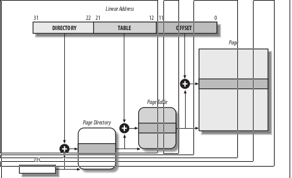

The paging unit translates linear addresses into physical ones. One key task in the
unit is to check the requested access type against the access rights of the linear
address. If the memory access is not valid, it generates a Page Fault exception
For the sake of efficiency, linear addresses are grouped in fixed-length intervals called
pages; contiguous linear addresses within a page are mapped into contiguous physi-
cal addresses. In this way, the kernel can specify the physical address and the access
rights of a page instead of those of all the linear addresses included in it. Following
the usual convention, we shall use the term “page” to refer both to a set of linear
addresses and to the data contained in this group of addresses.
The paging unit thinks of all RAM as partitioned into fixed-length page frames
(sometimes referred to as physical pages). Each page frame contains a page—that is,
the length of a page frame coincides with that of a page. A page frame is a constitu-
ent of main memory, and hence it is a storage area. It is important to distinguish a
page from a page frame; the former is just a block of data, which may be stored in
any page frame or on disk.
The data structures that map linear to physical addresses are called page tables; they
are stored in main memory and must be properly initialized by the kernel before
enabling the paging unit.
Starting with the 80386, all 80 × 86 processors support paging; it is enabled by set-
ting the PG flag of a control register named cr0 . When PG = 0 , linear addresses are
interpreted as physical addresses.
Regular Paging
Starting with the 80386, the paging unit of Intel processors handles 4 KB pages.
The 32 bits of a linear address are divided into three fields:
Directory
The most significant 10 bits
Table
The intermediate 10 bits
Offset
The least significant 12 bits

The translation of linear addresses is accomplished in two steps, each based on a
type of translation table. The first translation table is called the Page Directory, and
the second is called the Page Table
The entries of Page Directories and Page Tables have the same structure. Each entry
includes the following fields:
Present flag
If it is set, the referred-to page (or Page Table) is contained in main memory; if
the flag is 0, the page is not contained in main memory and the remaining entry
bits may be used by the operating system for its own purposes. If the entry of a
Page Table or Page Directory needed to perform an address translation has the
Present flag cleared, the paging unit stores the linear address in a control register
named cr2 and generates exception 14: the Page Fault exception. (We will see in
Chapter 17 how Linux uses this field.)
Field containing the 20 most significant bits of a page frame physical address
Because each page frame has a 4-KB capacity, its physical address must be a mul-
tiple of 4096, so the 12 least significant bits of the physical address are always
equal to 0. If the field refers to a Page Directory, the page frame contains a Page
Table; if it refers to a Page Table, the page frame contains a page of data.
Accessed flag
Set each time the paging unit addresses the corresponding page frame. This flag
may be used by the operating system when selecting pages to be swapped out.
The paging unit never resets this flag; this must be done by the operating system.
Dirty flag
Applies only to the Page Table entries. It is set each time a write operation is per-
formed on the page frame. As with the Accessed flag, Dirty may be used by the
operating system when selecting pages to be swapped out. The paging unit never
resets this flag; this must be done by the operating system.
Read/Write flag
Contains the access right (Read/Write or Read) of the page or of the Page Table
(see the section “Hardware Protection Scheme” later in this chapter).
User/Supervisor flag
Contains the privilege level required to access the page or Page Table (see the
later section “Hardware Protection Scheme”).
PCD and PWT flags
Controls the way the page or Page Table is handled by the hardware cache (see
the section “Hardware Cache” later in this chapter).
Page Size flag
Applies only to Page Directory entries. If it is set, the entry refers to a 2 MB– or 4
MB–long page frame (see the following sections).
Global flag
Applies only to Page Table entries. This flag was introduced in the Pentium Pro
to prevent frequently used pages from being flushed from the TLB cache (see the
section “Translation Lookaside Buffers (TLB)” later in this chapter). It works
only if the Page Global Enable ( PGE ) flag of register cr4 is set.